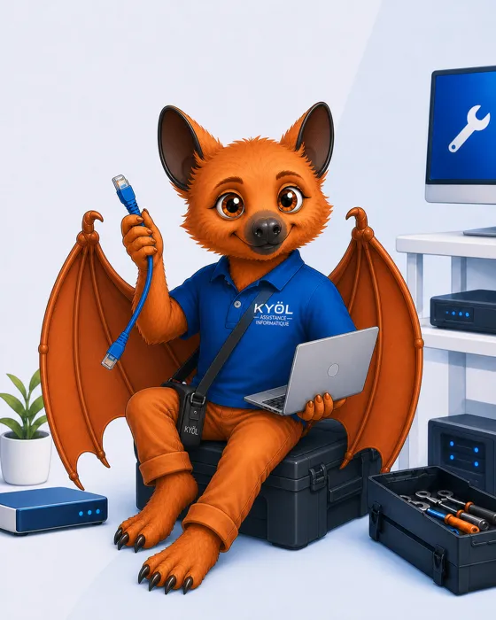
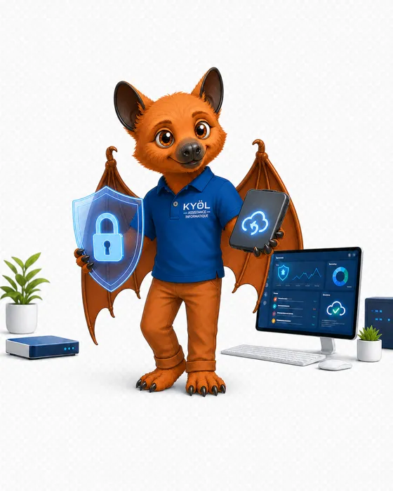
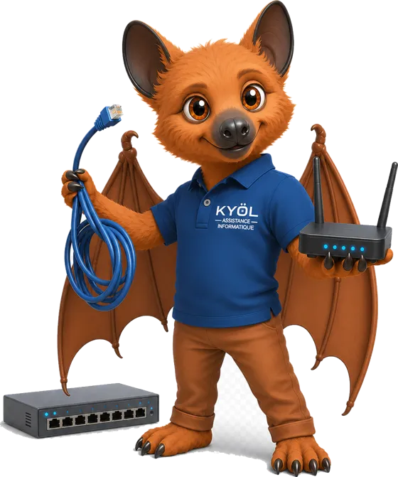
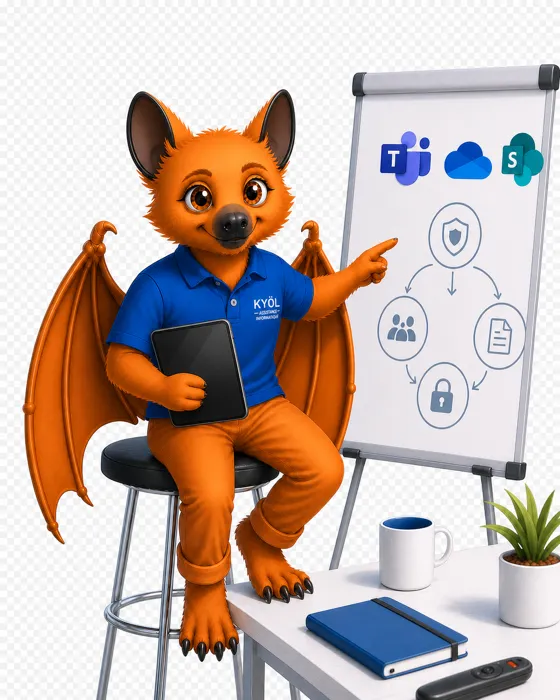

Nos services
Des solutions adaptées à chaque situation, pour les particuliers comme pour les professionnels.
Un accompagnement sur mesure
Quatre domaines d’expertise, pour les particuliers comme pour les professionnels. Sélectionnez un service pour en découvrir le détail.
Dépannage & maintenance
Comptez sur une assistance réactive, sur place ou à distance, pour vos ordinateurs, vos périphériques et vos petits serveurs.
- Interventions sur site ou à distancePrise en main à distance sécurisée ou déplacement chez vous, avec un suivi clair des délais.
- Postes fixes et portables, Mac & PCDiagnostic des pannes matérielles et logicielles, lenteurs, virus, réinstallation et optimisation.
- Serveurs légers et NASPrise en charge des petites infrastructures : serveur de fichiers, partages, NAS.
- Maintenance préventiveMises à jour, nettoyage, contrôle de santé des disques et du matériel pour éviter les mauvaises surprises.
- PériphériquesImprimantes, scanners, routeurs et Wi-Fi : installation, configuration et dépannage.
- Support hotlineUn interlocuteur unique joignable par téléphone pour vos questions du quotidien.

Sécurité & sauvegarde
Protégez vos postes, vos accès et vos fichiers avec des solutions professionnelles adaptées à votre taille.
- Protection nouvelle génération (EDR/EPP)Migration vers Bitdefender, Huntress ou Sophos, en remplacement des antivirus classiques.
- Sauvegardes locales et cloudSauvegarde sur NAS et externalisée dans le cloud, avec des tests de restauration réguliers.
- Sécurité des accèsMots de passe robustes et authentification multifacteur (MFA) sur vos comptes sensibles.
- Sécurité matériellePare-feu, onduleurs et filtrage DNS pour protéger votre réseau et vos équipements.
- SensibilisationFormation de vos équipes au phishing et aux bonnes pratiques de cybersécurité.

Réseaux & connexion
Un réseau qui fonctionne, c’est une activité sans stress. Nous auditons, configurons et documentons votre installation.
- Wi-FiAudit de couverture et optimisation pour supprimer les zones blanches et les coupures.
- Routeurs, box et switchsConfiguration et sécurisation de vos équipements réseau.
- VPNAccès distant sécurisé à vos fichiers et applications depuis l’extérieur.
- Câblage et segmentationBrassage, câblage et séparation des réseaux professionnel et invités.
- DocumentationPlan réseau clair (schéma, brassage identifié) remis à la fin de l’intervention.

Conseil & formation
Un accompagnement adapté à votre niveau pour mieux utiliser vos outils et investir au bon endroit.
- Accompagnement individuel ou en groupeFormations pratiques sur vos propres outils, à votre rythme.
- Microsoft 365Prise en main de Teams, SharePoint, OneDrive et des applications Office.
- Audit informatiqueÉtat des lieux de votre parc avec rapport et recommandations concrètes.
- Conseil avant achatChoix du matériel, plan de renouvellement et bonnes pratiques.
- Sensibilisation cybersécuritéLes bons réflexes pour éviter arnaques et piratages.
